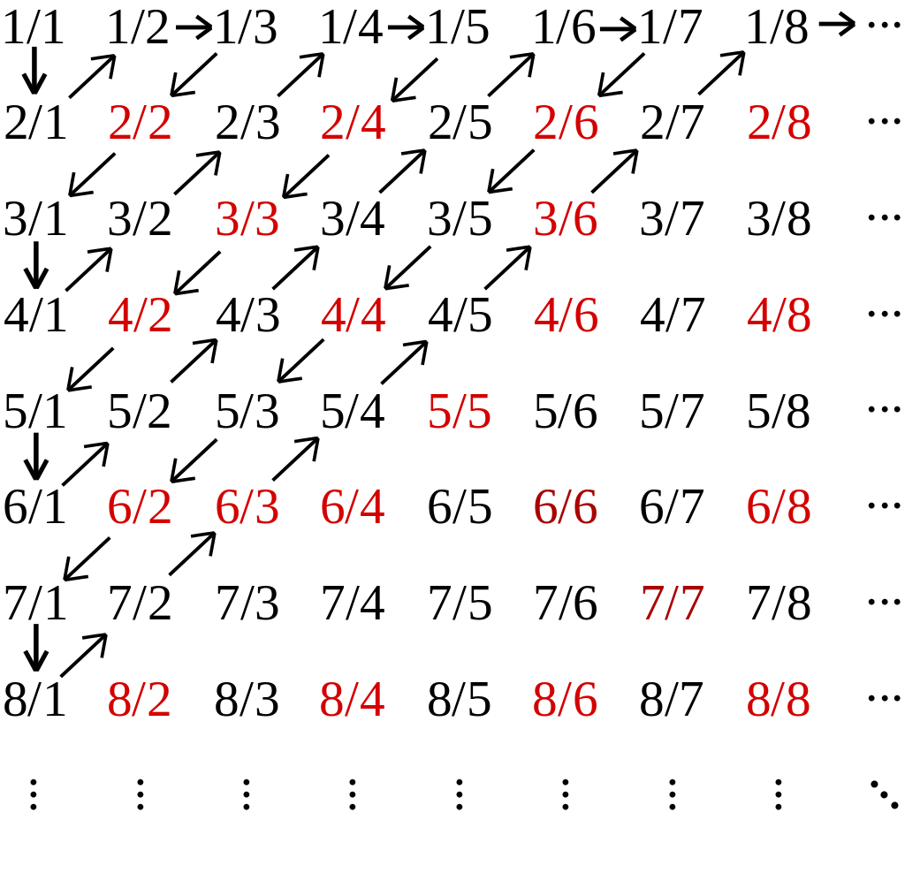

목표와 해볼것들
- 이전포스팅에서 유한집합간의 크기비교는 두 집합간의 어떤 함수가 존재하는지를 통해서 가능하다고 정리했습니다.
- 여기서는 이를 무한집합에서 확장하여 실제로 여러가지 서로다른 무한집합간의 크기(엄밀히,
cardinality입니다. 포스팅에서는 크기와 cardinality를 혼용합니다.)를 비교합니다. - 즉, 두 무한집합간의
전사,단사,전단사함수가 존재여부를 확인합니다. - 결과적으로 이전의 포스팅에서 무리수 집합의
길이는 \(2\pi\) 유리수 집합의 길이는 0이였는데 이에 대한 직관을 얻을 수 있습니다.
자연수집합의 cardinality
- 자연수 집합 \(\mathbb{N} = \{1,2,3,\dots\}\)의 크기는 다음과 같이 정의합니다.(알에프널이라 읽어요.)
\[|\mathbb{N} = \aleph_0\]
- 우리의 목적은 무한집합간의 크기를 비교하는 것이였습니다.
- 그러기 위해서 자연수집합의 크기는 \(\aleph_0\) 정하고 다른집합이 이 크기보다 큰지 작은지를 확인합니다.
- 이 크기보다 큰지 작은지는 자연수집합과 또다른 집합간에 어떤 함수가 존재하는지를 통해 확인할 수 있습니다.
무한집합간의 크기비교(크기가 \(\aleph_0\)인 경우)
자연수집합의 vs 홀수집합,짝수집합
홀수집합 vs 짝수집합의 경우
- 먼저 홀수집합 vs 짝수집합의 크기를 비교합니다.
- 즉,\(X = \{1,3,5,\dots\},Y = \{2,4,6,\dots\}\)의 크기를 비교합니다.
- 두 무한집합사이에 크기를 비교하려면 어떤함수가 정의될 수 있는지 확인한 후 함수의 종류와 Cardinality와의 관계을 통해서 결론을 내리면 됩니다.
- \(f\)정의하기 \[\begin{aligned} f(1) &= 2 \\ f(3) &= 4 \\ f(5) &= 6 \\ &\vdots \end{aligned}\]
- 단사함수인가?(정의를 통해 확인)
- definition : \(\forall x_1,x_2\in X,x_1\neq x_2\implies f(x_1)\neq f(x_2)\)
- 정의역에 속한 임의의,모든 원소가 공역에 속하는 서로다른 원소에 mapping되므로 단사함수이다.
- 전사함수인가?(정의를 통해 확인)
- definition : \(\forall y \in Y,\exists x \in X \text{ such that } y = f(x)\)
- 공역에 속한 임의의,모든 원소가 적어도 하나의 정의역에 속하는 원소에 mapping되므로 전사함수이다.
자연수(양의정수)집합 vs 홀수,짝수집합의 경우
- \(f\)정의하기 \[\begin{aligned} f(1) &= 2 \\ f(2) &= 4 \\ f(3) &= 6 \\ &\vdots \end{aligned}\]
- 단사함수인가?
- definition : \(\forall x_1,x_2\in X,x_1\neq x_2\implies f(x_1)\neq f(x_2)\)
- 정의역에 속한 임의의,모든 원소가 공역에 속하는 서로다른 원소에 mapping되므로 단사함수이다.
- 전사함수인가?
- definition : \(\forall y \in Y,\exists x \in X \text{ such that } y = f(x)\)
- 공역에 속한 임의의,모든 원소가 적어도 하나의 정의역에 속하는 원소에 mapping되므로 전사함수이다.
- 결론 Q-궁금한거 : 정수집합에 대해서는 어떻게 cardinality가 같음을 유도할 수 있는가?
- 또한 이를 확장하여,정수집합(양의정수 + 음의정수 + 0)도 자연수집합과 cardinality가 같음을 보일 수 있다.(???)
- 즉, \(|\mathbb{N}| = |\mathbb{N}| = \aleph_0\)
자연수집합 vs 자연수집합 \(\cup \{0\}\)
- 자연수집합과 자연수집합 \(\cup \{0\}\)의 크기를 비교해보겠습니다.
- 즉, \(\mathbb{N} = \{1,2,3,\dots\}, \mathbb{N}\cup \{0\} = \{0,1,2,3,\dots\}\)의 크기를 비교합니다.
- \(f\)정의하기 \[\begin{aligned} f(1) &= 0 \\ f(2) &= 1 \\ f(3) &= 2 \\ &\vdots \end{aligned}\]
- 단사함수인가?(정의를 통해 확인)
- definition : \(\forall x_1,x_2\in X,x_1\neq x_2\implies f(x_1)\neq f(x_2)\)
- 정의역에 속한 임의의,모든 원소가 공역에 속하는 서로다른 원소에 mapping되므로 단사함수입니다.
- 전사함수인가?(정의를 통해 확인)
- definition : \(\forall y \in Y,\exists x \in X \text{ such that } y = f(x)\)
- 공역에 속한 임의의,모든 원소가 적어도 하나의 정의역에 속하는 원소에 mapping되므로 전사함수입니다.
자연수집합 vs 자연수집합 \(\cup\) 음의정수집합
- 자연수집합과 양의정수집합\(\cup\)음의정수집합을 비교합니다.
- 즉, \(\mathbb{N} = \{1,2,3,\dots\}, \mathbb{N}\cup \mathbb{N}^- = \{-1,1,-2,2,\dots\}\)의 크기를 비교합니다.
- \(f\)정의하기 \[\begin{aligned} f(1) &= -1 \\ f(2) &= 1 \\ f(3) &= -2 \\ f(4) &= 2 \\ &\vdots \end{aligned}\]
- 두 집합간의 mapping을 -1,1,-2,2 이런식으로 mapping하는게 포인트입니다.(전 못했습니다…)
- 단사함수인가?(정의를 통해 확인)
- definition : \(\forall x_1,x_2\in X,x_1\neq x_2\implies f(x_1)\neq f(x_2)\)
- 정의역에 속한 임의의,모든 원소가 공역에 속하는 서로다른 원소에 mapping되므로 단사함수입니다.
- 전사함수인가?(정의를 통해 확인)
- definition : \(\forall y \in Y,\exists x \in X \text{ such that } y = f(x)\)
- 공역에 속한 임의의,모든 원소가 적어도 하나의 정의역에 속하는 원소에 mapping되므로 전사함수입니다.
자연수집합 vs 정수집합
- 자연수집합과 양의정수집합\(\cup\)음의정수집합을 비교합니다.
- 즉, \(\mathbb{N} = \{1,2,3,\dots\}, \mathbb{Z} = \{0,-1,1,-2,2,\dots\}\)의 크기를 비교합니다.
- \(f\)정의하기 \[\begin{aligned} f(1) &= 0 \\ f(2) &= -1 \\ f(3) &= -1 \\ f(4) &= -2 \\ f(5) &= -2 \\ &\vdots \end{aligned}\]
- 이전 챕터와 비슷하게 두 집합간의 mapping을 0,-1,1,-2,2 이런식으로 교차하면서 mapping합니다.
- 단사함수인가?(정의를 통해 확인)
- definition : \(\forall x_1,x_2\in X,x_1\neq x_2\implies f(x_1)\neq f(x_2)\)
- 정의역에 속한 임의의,모든 원소가 공역에 속하는 서로다른 원소에 mapping되므로 단사함수입니다.
- 전사함수인가?(정의를 통해 확인)
- definition : \(\forall y \in Y,\exists x \in X \text{ such that } y = f(x)\)
- 공역에 속한 임의의,모든 원소가 적어도 하나의 정의역에 속하는 원소에 mapping되므로 전사함수입니다.
자연수집합 vs 유리수집합
- 자연수집합과 유리수집합의 크기를 비교합니다.
- 유리수 이전의 비교처럼 뭔가 한번에 두 집합사이를 비교하기가 어렵습니다.
- 따라서 먼저 양의 유리수집합 (\(\mathbb{Q}^+\)로 정의하겠습니다.)을 포함하는 집합 \(Y\)을 가정하고 이를 먼저 자연수 집합과 비교합니다.
- 즉,\(\mathbb{N} = \{1,2,\dots\},Y = \{1,\frac{2}{1}\,\frac{1}{2},\frac{1}{3},\frac{2}{2},\frac{3}{1}\dots\} \supset \mathbb{Q}^+\)입니다.
- 그렇다면, 집합\(Y\)의 모든 원소는 다음과 같은 격자의 가로축을 분모로 세로축을 분자로 생각할때 격자위에 모두 놓일 수 있습니다.

- \(f\)정의하기 \[\begin{aligned} f(1) &= 1 \\ f(2) &= \frac{2}{1} \\ f(3) &= \frac{1}{2} \\ f(4) &= \frac{1}{3} \\ f(5) &= \frac{2}{2} \\ f(6) &= \frac{3}{1} \\ &\vdots \end{aligned}\]
- 자연수1부터 차례대로 격자위의 화살표의 순서를 따라서 집합\(Y\)의 원소에 매핑합니다.
- 대각선 어떤 방향이던 일단 방향이 정해지면 정해진 방향의 원소는 모두 스치면서 지나갑니다.
- 단사함수인가?
- definition : \(\forall x_1,x_2\in X,x_1\neq x_2\implies f(x_1)\neq f(x_2)\)
- 정의역에 속한 임의의,모든 원소가 공역에 속하는 서로다른 원소에 mapping되므로 단사함수이다.
- 전사함수인가?
- definition : \(\forall y \in Y,\exists x \in X \text{ such that } y = f(x)\)
- 공역(양의 유리수집합)에 속한 임의의,모든 원소가 적어도 하나의 정의역에 속하는 원소에 mapping되므로 전사함수이다.
- 유도
- 우리는 \(\mathbb{Q}^+ \subset Y\) 이므로 \(|\mathbb{Q}^+| \leq |Y|\)와 \(\mathbb{N} \subset \mathbb{Q}^+\)이므로 \(|\mathbb{N}| = \aleph_0 \leq |\mathbb{Q}^+|\)을 이미 알고있습니다.(양의 유리수집합은 자연수를 포함하며, 명제는 함수의 종류와 cardinality와의 관계에서 증명된 사실입니다.)
- 또한 3번까지의 유도과정에 의하여 상기식에 의하여 \(|\mathbb{N}| = |Y| = \aleph_0\) 입니다.
- 그렇다면 \(|\mathbb{N}| \leq|\mathbb{Q}^+| \leq |Y|\) 이고 \(|\mathbb{N}| = |Y| = \aleph_0\)이므로 \(|\mathbb{Q}|^+ = \aleph_0\)임을 알 수 있습니다.
- 또한 음의 유리수집합 \(|\mathbb{Q}|^-\)도 자연수집합의 크기와 같음을 알 수 있습니다.(증명생략,위와 같이 격자에 대고 하면 됩니다.)
- 유리수집합은 양의 유리수집합 + 음의 유리수집합 + \(\{0\}\)입니다.
- 여기서 과감하게 사용한 앞선 정리들을 사용합니다. (\(\aleph_0 \times 2 = \aleph_0\),\(\aleph_0 + 1 = \aleph_0\))
- 따라서 \(|\mathbb{Q}| = |\mathbb{Q}^+| + |\mathbb{Q}^-| + |{0}| = \aleph_0 \times 2 + 1 = \aleph_0 + 1 = \aleph_0\) 입니다.
직관적인 정리
- 위에서 나왔던 (엄밀하진 않은..)사실들을 정리합니다.
- \(\aleph_0 + 1 = \aleph_0\,\,,|\mathbb{N}| = |\mathbb{N}| \cup \{0\}\)
- \(\aleph_0 \times 2 = \aleph_0\,\,,\)자연수집합과 음의정수집합을 더한 집합의 카디널리티는 자연수집합의 카디널리티와 같습니다.
- \(\aleph_0\times \aleph_0 = \aleph_0 ^2 = \aleph_0\,\,,\)자연수집합과 자연수집합의 곱집합으로 유리수집합(보다 큰)을 만들 수 있는데 이 집합도 자연수집합의 카디널리티와 같습니다.
무한집합간의 크기비교(크기가 \(\aleph_0\)이 아닌 경우)
- 우리의 목표 중 한가지는 유리수집합이 왜 무리수집합보다 길이가 작은지에 대한 직관을 두 집합의
cardinality를 비교함으로서 얻는 것이였습니다. - 앞선 예제들에서 얻은 결론들은 크게 다음과 같았습니다.
\[ \text{Let } |\mathbb{N}| = \aleph_0 \\ \]
\[\begin{aligned} \aleph_0 &=|\mathbb{N}| = |\mathbb{N}^+| = |\mathbb{N}^-|\\ &= |\mathbb{Q}| = |\mathbb{Q}^+| = |\mathbb{Q}^-| \\ &= |\mathbb{Z}| = |\mathbb{Z}^+| = |\mathbb{Z}^-| \\ \end{aligned}\]- 뿐만아니라 임의의 집합과의 합집합도 \(|X \cup \{0\}| = \aleph_0\) 이었으며 크기가 \(\aleph_0\)로 같은 집합의 합집합도 \(\aleph_0\)였습니다.
- 이렇게만 보면 거의 모든 집합이 자연수집합과 크기가 같은 것처럼 보이지만 뒤에서 소개할
실수집합,무리수집합은자연수집합보다 크기가 더 큽니다. - 이를 증명하기 위해 먼저 어떤 명제가 참 또는 거짓임을 증명하는 다른 방법인
귀류법을 소개합니다.
귀류법
- 귀류법은 명제의 참 or 거짓을 증명하는 하나의 방법입니다.
- 대략 이런 느낌으로 증명을 진행합니다.
- 어떤 명제가 참임을 증명하고자 한다고 가정해봅시다.
ex)“A는 치킨먹을때 물은 절대 안먹는다.”라는 명제가 참임을 증명해봅시다. - 그렇다면 이에 정확히 반대가 되는 명제를 가정하고 식을 전개했을때 어떤 이상함,맞지않음(
모순)을 찾습니다. ex)여기서는 “A가 물을 먹을때도 있다.”라는 명제가 참이라고 가정하고 하고 모순을 찾습니다. - 만약
모순을 찾는다면 반대가 되는 명제는 이상함이 있는 것이므로 참인명제가 아닙니다. 따라서 이에 반대되는 명제는 사실입니다. ex)치킨을 같이 먹어본 결과 A가 물을 전혀 안 먹었습니다. 그러면 “A가 물을 먹을때도 있다.”라는 명제는 거짓이므로 “A는 치킨먹을때 물은 절대 안먹는다.”라는 명제가 참입니다.
- 어떤 명제가 참임을 증명하고자 한다고 가정해봅시다.
- 느낌 : 틀리거나 정확하거나,맞거나 아니거나 뭐던지 하나가 아니라고 나오면 다른건 무조건 맞는 말인
이분법느낌?
유리수집합 vs 실수집합
문제 쉽게만들기
- 우리의 목표는 유리수집합 vs 무리수집합의 크기를 비교하여 길이가 다름에 대한 직관을 얻는 것이였습니다.
- 그러기 위해서 먼저 유리수집합과 실수집합의 크기를 비교합니다.
- 증명하고자 명제는 다음과 같습니다.
\[|\mathbb{Q}| < |\mathbb{R}|\]
- 그런데 여기서 문제를 살짝 바꿔서 \(|\mathbb{Q}| = |\mathbb{N}|\)을 이용하여 다음과 같은 명제를 증명하는 문제로 바꿔서 생각합니다.(아마 바로 풀기 어려워서 그런 것 같습니다.)
\[ |\mathbb{N}| < |\mathbb{R}|\]
- 여기서 또 한번 문제를 바꿔서 생각합니다.
- \([0,1] \subset \mathbb{R}\)이므로 \(|[0,1]| \leq |\mathbb{R}|\)입니다.
- 만약 자연수집합의 크기가 [0,1]집합의 크기보다 작다는 명제가 참이라고 증명된다면 [0,1]집합은 반드시 실수집합의 크기보다 작거나 같으므로 위의 명제도 반드시 참입니다.(작은 집합보다 작은데 그보다 큰(적어도 같은)집합보다 클 수 가 없어요,충분조건)
- 즉 이 문제는 다음의 명제를 증명하는 문제로 바뀌게 됩니다.
\[ |\mathbb{N}| < |[0,1]|\]
귀류법 사용하기
- 위의 명제가 참임을 증명하기 위해서 귀류법을 사용합니다.
- 먼저 정확히 반대가 되는 명제는 다음과 같습니다.
\[|\mathbb{N}| \geq |[0,1]|\]
- 이 명제가 참이라는 것은 \(f : \mathbb{N} \rightarrow [0,1]\)인 전사함수가 존재한다는 것과 동치입니다.
- 따라서 아래와 같은 전사함수가 존재한다고 가정합니다.
- 전사함수라 가정했으므로 정의에 의해 \([f(1),f(2),f(3),\dots] = [0,1]\)이 됩니다.(전사함수는 치역과 공역이 같은 함수입니다. 공역의 모든 원소는 정의역의 원소에 대응됩니다.)
- 이제 \(0.x_1x_2x_3\dots\)라는 숫자를 가정해봅시다.
- \(x_i\)는 소수점 아래 \(i\)번째 숫자를 의미하며 이는 \(f(i)\)의 소수점 첫번째 숫자와는 다른 숫자입니다.
- 위의 예시에서는 \(x_1 \not=7,x_2\not=4,x_3\not=2\)입니다.
- 소수점 한자리씩 살펴보면 다음과 같은 사실이 나타납니다. \[0.x_1 \not\in [f(1)],0.x_1x_2 \not\in [f(1),f(2)],0.x_1x_2x_3 \not\in [f(1),f(2),f(3)]\]
- 이를 계속해서 무한히 살펴보면 다음과 같습니다.(집합기호 오른쪽은 전사함수 정의에 의해 공역 = 치역이므로 같습니다.) \[0.x_1x_2x_3x_4\dots \not\in [f(1),f(2),f(3),\dots] = [0,1]\]
- 분명히 \(0.x_1x_2x_3x_4\dots\)는 \([0,1]\)에 속하는 숫자인데 전개가 된 위의 식에 의하여 \([0,1]\)에 속하지 않는다는 모순이 발생합니다.
- 따라서 위의 명제 \(|\mathbb{N}| \geq |[0,1]|\) 거짓이며 \(|\mathbb{N}| < |[0,1]|\)가 참인 명제입니다.
- 이는 궁극적으로 우리가 궁금했던 명제\(|\mathbb{Q}| < |\mathbb{R}|\)가 참임을 증명하기 위한 충분조건이였습니다.
- 따라서 \(|\mathbb{Q}| < |\mathbb{R}|\)는 참입니다.
유리수집합 vs 무리수집합
여기서는 귀류법을 사용하여 무리수집합의 카디널리티가 무리수집합의 카디널리티와 다름을 증명합니다.
즉 다음을 증명하고자 하는 명제는 다음과 같습니다. \[|\mathbb{Q}| \not= |\mathbb{Q}^c|\]
먼저 이와 반대되는 명제를 가정합니다. \[|\mathbb{Q}| = |\mathbb{Q}^c| = \aleph_0\]
윗식에서 유리수집합의 크기는 \(\aleph_0\)로 이미 증명된 사실입니다.
따라서 반대되는 명제에서 유리수집합과 무리수집합의 크기는 \(\aleph_0\)로 같습니다.
음의정수 집합의 크기 \(|\mathbb{N}^-| = \aleph_0\)이므로 반대되는 명제와 함께 다음의 명제를 유도할 수 있습니다.
- \(|\mathbb{Q}| = \aleph_0\)이므로 \(f : \mathbb{Q} \rightarrow \mathbb{N}\)인 전단사함수 \(f\)가 존재한다.
- \(|\mathbb{Q^c}| = \aleph_0\)이므로 \(g : \mathbb{Q^c} \rightarrow \mathbb{N^-}\)인 전단사함수 \(g\)가 존재한다.
따라서 \(h : \mathbb{Q}\cup\mathbb{Q^c} \rightarrow \mathbb{N} \cup \mathbb{N}^-\)인 전단사함수가 \(h\)가 존재함을 알 수 있으며 \(|\mathbb{Q}\cup\mathbb{Q^c}| = |\mathbb{N} \cup \mathbb{N}^-| = \aleph_0\)임을 유도할 수 있습니다.(정수집합에서 0을 뺀 집합인 \(\mathbb{N} \cup \mathbb{N}^-\)도 자연수집합과 크기가 같음을 위해서 증명했었습니다.)
그러나 여기서 \(|\mathbb{Q} \cup \mathbb{Q^c}|\)는 우리는 실수집합 \(\mathbb{R}\)이며 \(|\mathbb{Q}| < |\mathbb{R}|\)이미 참인 명제임을 이전에 증명했었습니다.
따라서 모순이 생겼으므로 \(|\mathbb{Q}| = |\mathbb{Q}^c|\)는 거짓인 명제이며 따라서 증명하고자 했던 명제\(|\mathbb{Q}| \not= |\mathbb{Q^c}|\)는 참임이 밝혀졌습니다.
해결해야 할 것
- \(|\mathbb{Q}| < |\mathbb{Q^c}|\) 증명하는 방법?